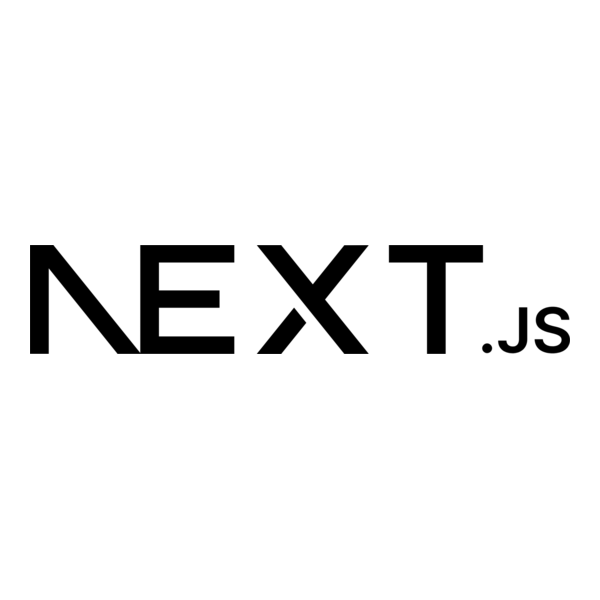

Compétences techniques

Développement Web
Création d'interfaces modernes et dynamiques avec HTML, CSS, JavaScript, React, TailwindCSS et NextJS. Conception de sites web, Application Web et mise en ligne. Bonne compréhension du modèle client-serveur.

Base de données
Conception et gestion de bases relationnelles avec SQL, BigQuery et Prisma. Requêtes optimisées, maintenance et sécurité des données.
Développement Logiciel
Programmation orientée objet en Python. Création d'applications simples et gestion de versions via Git/GitHub.
Analyse de données
Certification Google Data Analytics. Maîtrise du cycle complet : collecte, nettoyage, traitement, visualisation et reporting.
Stack technologique que je maîtrise


